Analysis of a Preregistered Two‑Arm Active Control Online RCT, with a Durability Check
Author
Scott J. Forman
Published
September 15, 2025
Abstract
We conducted a preregistered two‑arm online RCT (N = 180 MMR hesitant U.S. parents of young children) comparing a timer‑gated four‑panel MMR content carousel followed by an LLM‑guided conversation against a structure-matched, non‑vaccine-related active control (car seat safety). An ANCOVA on post‑intent controlling for baseline intention estimates an adjusted arm effect of β̂ ≈ 1.03 points (95% CI 0.72–1.34) on a 1–7 vaccination intention scale. A post‑intervention delayed follow‑up on a separate sample (N = 66) shows a consistent effect size of β̂ ≈ 1.09 (95% CI 0.52, 1.66). Conclusion: a brief intervention combining persuasive content with an LLM conversation significantly increases MMR intention relative to control, with signs of durability over a period of several days.
Deviations: (i) An initial outcome‑page failure prevented immediate post‑intent collection for a subset; those participants were later contacted in a rescue follow‑up. Confirmatory inference uses only the clean re‑run per preregistration; the rescue durability analysis is exploratory. (ii) Compensation increased across batches to maintain enrollment ($2.50 → $3.50 → $4.50) without changing the protocol or analysis plan.
Confirmatory set and exclusions: in preregistration, hard exclusions for obvious bots or exposure failures were planned. In practice no participant could be unambiguously classified as such, so the confirmatory set includes all randomized participants who completed the study. We report a sensitivity excluding two borderline cases; results are unchanged.
Methods
Recruitment: U.S.-resident parents of at least one child born in 2019 or later, who indicated less than complete confidence in vaccine safety, and who had not participated in one of our previous studies, were recruited via Prolific.
Flow: After consenting, participants were shown a mock‑appointment page with two buttons: “I have questions or concerns about MMR” and “No concerns about the MMR vaccine.” Participants who clicked “No concerns about the MMR vaccine” were screened out and awarded a small payment. Participants who clicked “I have questions or concerns about MMR” were asked to imagine an upcoming appointment with a pediatric medical provider, and indicate on a scale of 1-7 the likelihood that they would have their child receive a dose of the MMR vaccine at that visit. Those at the ceiling (7) exited and were granted a small payment. Those with baseline ≤ 6 were randomized 1:1 to Experimental or Control, and completed a short pre-intervention demographic survey. All randomized participants saw the matched carousel and interactive chat segment, then answered the vaccination intent question a second time.
Structure: Both study arms used the same interface and engagement rules. Participants first saw a brief, scrollable information carousel, followed by an interactive conversation segment. The only difference between arms was the content topic: MMR vaccine (Experimental) versus car‑seat safety (Active Control).
Outcome: Post‑intervention MMR intention (1–7). The primary analysis adjusted for baseline intention.
Primary model: ANCOVA post_intent ~ arm_coded + pre_intent with HC3 robust SEs on participants with baseline head‑room (≤ 6) who met preregistered engagement rules. We retained all randomized participants; two cases appeared borderline low‑quality and were excluded in a sensitivity check, which did not materially change results.
A separate exploratory “durability” analysis used delayed post‑intent from the “rescue” dataset.
Batches: Recruitment proceeded in three batches with rising compensation to maintain enrollment when it slowed: Batch 2B at $2.50, Batch 2B2 at $3.50, and Batch 2B3 at $4.50. Each relaunch followed the same protocol and analysis plan.
Data Import
Here we load all data sources used in the analysis.
These denormalized analysis views are the batch‑level source used for the confirmatory models (one row per randomized participant, with assigned condition, pre/post intention, engagement metrics, and batch labels).
Rescue set: coverage of pre and delayed post‑intent
N_rows
N_with_pre
N_with_post_rescue
90
90
66
Rescue follow-up response by assigned arm
arm_fct
N
Responded
Rate
Control
42
34
81.0%
Treatment
48
32
66.7%
The rescue analysis_view contains baseline and process fields from the affected run; the Prolific export holds delayed post‑intent collected later. We link them by hashed Prolific IDs and compute the delay in days between intervention completion and the post-intervention intent data collection.
read_prolific <-function(fpath) {if (is.na(fpath) ||!fs::file_exists(fpath)) return(NULL) df <- readr::read_csv(fpath, show_col_types =FALSE) df$batch <-infer_batch_label(fpath) df %>%transmute( batch,submission_id =`Submission id`,prolific_pid =`Participant id`,status = Status,started_at =`Started at`,completed_at =`Completed at`,time_taken_s =suppressWarnings(as.numeric(`Time taken`)),completion_code =`Completion code` )}prolific_raw <- purrr::map(prolific_files, read_prolific) %>% purrr::compact() %>%bind_rows()status_levels <-c("RETURNED","SCREENED OUT","TIMED OUT","REJECTED","APPROVED","MISSING")prolific_clean <- prolific_raw %>%mutate(status =ifelse(is.na(status) | status =="", "MISSING", status),status =factor(status, levels = status_levels),batch =factor(batch, levels =c("2B","2B2","2B3")))counts_long <- prolific_clean %>%count(status, batch, name ="N")batch_totals <- counts_long %>%group_by(batch) %>%summarise(batch_total =sum(N), .groups ="drop")# Compute row-wise percentages in long form, then pivot to labelscounts_long_labeled <- counts_long %>%left_join(batch_totals, by ="batch") %>%mutate(pct =ifelse(batch_total >0, 100* N / batch_total, NA_real_),label =sprintf("%d (%.1f%%)", N, pct)) %>%select(status, batch, label)# Numeric wide for totals, labeled wide for displaycounts_wide_num <- counts_long %>% tidyr::pivot_wider(names_from = batch, values_from = N, values_fill =0) %>%arrange(status)counts_wide_lbl <- counts_long_labeled %>% tidyr::pivot_wider(names_from = batch, values_from = label, values_fill ="0 (NA%)") %>%arrange(status)counts_wide_lbl$Total <-rowSums(counts_wide_num %>%select(any_of(levels(prolific_clean$batch))))# Total rowgrand <-tibble(status ="Total")for (b inlevels(prolific_clean$batch)) { bt <- batch_totals$batch_total[batch_totals$batch == b] grand[[b]] <-sprintf("%d (100.0%%)", bt)}grand$Total <-sum(counts_wide_lbl$Total)fmt_tbl <-bind_rows(counts_wide_lbl, grand)knitr::kable(fmt_tbl, tbl_fmt, caption ="Prolific statuses by batch with totals (N and % of batch total)") %>%style_tbl()
Prolific statuses by batch with totals (N and % of batch total)
status
2B
2B2
2B3
Total
RETURNED
89 (30.1%)
41 (20.8%)
32 (19.9%)
162
SCREENED OUT
122 (41.2%)
88 (44.7%)
77 (47.8%)
287
REJECTED
2 (0.7%)
5 (2.5%)
4 (2.5%)
11
APPROVED
76 (25.7%)
57 (28.9%)
45 (28.0%)
178
NA
7 (2.4%)
6 (3.0%)
3 (1.9%)
16
Total
296 (100.0%)
197 (100.0%)
161 (100.0%)
654
These Prolific exports summarize recruitment statuses by batch (e.g., APPROVED, RETURNED). They are used for flow and recruitment descriptives only, not for outcome modeling.
read_exit <-function(fpath) {if (is.na(fpath) ||!fs::file_exists(fpath)) return(NULL) readr::read_csv(fpath, show_col_types =FALSE) %>%mutate(batch =infer_batch_label(fpath))}exit_paths <- purrr::map(exit_files, read_exit) %>% purrr::compact() %>%bind_rows()if (nrow(exit_paths) >0) { exit_paths <- exit_paths %>%mutate(pid_hash =hash_pid(prolific_pid),path =factor(completion_pathway, levels =c("confirm","ceiling","complete"))) %>%filter(!is.na(path)) exit_counts <- exit_paths %>%count(path, batch, name ="N") exit_totals <- exit_counts %>%group_by(batch) %>%summarise(batch_total =sum(N), .groups ="drop")# Compute percentages in long form then pivot to labels exit_long_labeled <- exit_counts %>%left_join(exit_totals, by ="batch") %>%mutate(pct =ifelse(batch_total >0, 100* N / batch_total, NA_real_),label =sprintf("%d (%.1f%%)", N, pct)) %>%select(path, batch, label) exit_wide_num <- exit_counts %>% tidyr::pivot_wider(names_from = batch, values_from = N, values_fill =0) %>%arrange(path) exit_wide_lbl <- exit_long_labeled %>% tidyr::pivot_wider(names_from = batch, values_from = label, values_fill ="0 (NA%)") %>%arrange(path) batches_fac <-levels(factor(exit_paths$batch)) exit_wide_lbl$Total <-rowSums(exit_wide_num %>%select(any_of(batches_fac))) grand_e <-tibble(path ="Total")for (b in batches_fac) { bt <- exit_totals$batch_total[exit_totals$batch == b] grand_e[[b]] <-sprintf("%d (100.0%%)", bt) } grand_e$Total <-sum(exit_wide_lbl$Total) fmt_exit <-bind_rows(exit_wide_lbl, grand_e) knitr::kable(fmt_exit, tbl_fmt, caption ="Exit pathways by batch (DB): N and % of batch total (confirm → ceiling → complete)") %>%style_tbl()}
Exit pathways by batch (DB): N and % of batch total (confirm → ceiling → complete)
path
2B
2B2
2B3
Total
confirm
123 (58.6%)
93 (58.5%)
68 (53.1%)
284
ceiling
10 (4.8%)
8 (5.0%)
15 (11.7%)
33
complete
77 (36.7%)
58 (36.5%)
45 (35.2%)
180
Total
210 (100.0%)
159 (100.0%)
128 (100.0%)
497
Exit paths provide the database source‑of‑truth for participant flow through the mock‑appointment step and pre-intervention intent survey (“confirm” [no concerns about MMR], “ceiling” [pre-intervention intent = 7], “complete”). We use these counts for the reach metric and in the CONSORT‑style flow diagram.
Sample Composition
We summarize randomized participants from the analysis view, as counts and percentages within each batch.
Show code
by_batch_arm <- trial_main %>%count(batch, arm_fct, name ="N")by_batch_tot <- by_batch_arm %>%group_by(batch) %>%summarise(batch_total =sum(N), .groups ="drop")# Percentages in long form, then pivot to labelsby_long_lbl <- by_batch_arm %>%left_join(by_batch_tot, by ="batch") %>%mutate(pct =ifelse(batch_total >0, 100* N / batch_total, NA_real_),label =sprintf("%d (%.1f%%)", N, pct)) %>%select(arm_fct, batch, label)main_wide_num <- by_batch_arm %>% tidyr::pivot_wider(names_from = batch, values_from = N, values_fill =0) %>%arrange(arm_fct)main_wide_lbl <- by_long_lbl %>% tidyr::pivot_wider(names_from = batch, values_from = label, values_fill ="0 (NA%)") %>%arrange(arm_fct)main_wide_lbl$Total <-rowSums(main_wide_num %>%select(-arm_fct))# Totals rowgrand_row <-tibble(arm_fct ="Total")for (b inunique(by_batch_arm$batch)) { denom <- by_batch_tot$batch_total[by_batch_tot$batch == b] grand_row[[b]] <-sprintf("%d (100.0%%)", denom)}grand_row$Total <-sum(main_wide_lbl$Total)fmt_main <-bind_rows(main_wide_lbl, grand_row)knitr::kable(fmt_main, tbl_fmt, caption ="Randomized sample by arm and batch (N and % of batch total)") %>%style_tbl()
Randomized sample by arm and batch (N and % of batch total)
arm_fct
2B
2B2
2B3
Total
Control
38 (49.4%)
29 (50.0%)
22 (48.9%)
89
Treatment
39 (50.6%)
29 (50.0%)
23 (51.1%)
91
Total
77 (100.0%)
58 (100.0%)
45 (100.0%)
180
Demographics
We summarize basic demographics using fields captured in the pre‑survey JSON (age, gender, political ideology).
The sample skews female (68.9%). Ideology leans conservative (51.7%). Ages cluster in 25-34 (51.1%) and 35-44 (34.4%).
Age
Age distribution (counts and %)
Level
N
Percent
25-34
92
51.1%
35-44
62
34.4%
45-54
14
7.8%
18-24
8
4.4%
55-64
4
2.2%
Show code
if (nrow(age_tbl) >0) {ggplot(age_tbl, aes(x =reorder(Level, -N), y = N)) +geom_col(fill ="#5B8E7D") +labs(x =NULL, y ="N") +theme_minimal() +theme(axis.text.x =element_text(angle =20, hjust =1))}
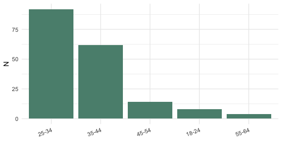
Age distribution (counts)
Gender
Gender distribution (counts and %)
Level
N
Percent
female
124
68.9%
male
55
30.6%
prefer-not
1
0.6%
Show code
if (nrow(gend_tbl) >0) {ggplot(gend_tbl, aes(x =reorder(Level, -N), y = N)) +geom_col(fill ="#7F7F7F") +labs(x =NULL, y ="N") +theme_minimal()}
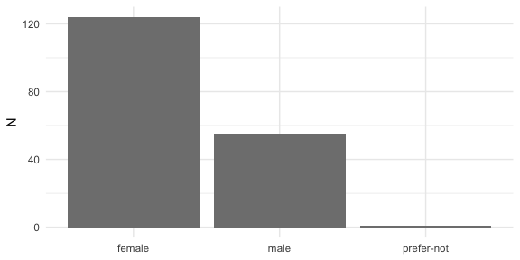
Gender distribution (counts)
Political ideology
Political ideology distribution (counts and %)
Level
N
Percent
conservative
93
51.7%
moderate
52
28.9%
liberal
32
17.8%
prefer-not
3
1.7%
Show code
if (nrow(ideo_tbl) >0) {ggplot(ideo_tbl, aes(x =reorder(Level, -N), y = N)) +geom_col(fill ="#6A3D9A") +labs(x =NULL, y ="N") +theme_minimal() +theme(axis.text.x =element_text(angle =20, hjust =1))}
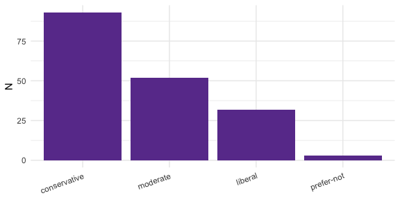
Political ideology distribution (counts)
Overview of Participant Flow
flowchart TD
A[Started study: 654] --> A0[Abandoned: 157]
A --> B[Consented: 497]
B --> S[Screened out: 317]
S --> C[No concerns about the MMR vaccine: 284]
S --> D[Ceiling: 33]
B --> E[Randomized: 180]
E --> A1[Allocated to Control: 89]
E --> A2[Allocated to Treatment: 91]
flowchart LR
init([.]) --> ready([.])
Among those who reached the mock‑appointment screen (N = 497), 42.9% (95% CI [38.5, 47.3]%) clicked “I have questions or concerns about MMR” (N = 213) and 57.1% (95% CI [52.7, 61.5]%) clicked “No concerns about the MMR vaccine” (N = 284). Within the questions/concerns branch, 15.5% (95% CI [10.9, 21.1]%) selected a baseline of 7 (N = 33) and 84.5% (95% CI [78.9, 89.1]%) had baseline ≤ 6 and proceeded to the intervention (N = 180). Overall, reach to the intervention was 36.2% (95% CI [32.0, 40.6]%) of those at the mock‑appointment step.
Batch Comparability
We test arm balance across batches and baseline comparability. Arms are balanced (p = 0.994); baseline intention is similar across batches (ANOVA p = 0.321); the estimated arm effect is stable across batches (Arm×Batch interaction p-values ≥ 0.943).
Show code
trial_bc <- trial_main %>%mutate(batch_fct =factor(batch, levels =sort(unique(batch))))# 1) Design balance: Arm × Batch counts and test ------------------------arm_by_batch <- trial_bc %>%count(batch_fct, arm_fct, name ="N") %>% tidyr::pivot_wider(names_from = arm_fct, values_from = N, values_fill =0)knitr::kable(arm_by_batch, tbl_fmt, caption ="Arm counts by batch") %>%style_tbl()
We estimate the adjusted arm difference using a simple ANCOVA on participants with baseline head‑room (≤ 6) who met preregistered engagement rules, and find that the treatment increased MMR‑intention by about a full point on the 1–7 scale (adjusted for baseline). All participants are retained; two borderline low‑quality cases do not affect results.
coef_df <- ci_tbl %>%transmute(term ="Treatment vs Control", estimate, conf.low, conf.high)ggplot(coef_df, aes(x = term, y = estimate)) +geom_hline(yintercept =0, linetype ="dashed", color ="gray60") +geom_errorbar(aes(ymin = conf.low, ymax = conf.high), width =0.15, color = treatment_color) +geom_point(size =2.2, color = treatment_color) +coord_flip() +labs(x =NULL, y ="Arm effect (β̂, 95% CI)") +theme_minimal()
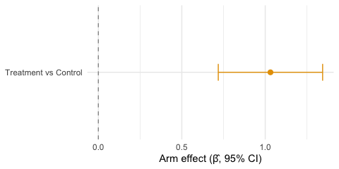
Adjusted arm effect (Treatment vs Control) with 95% CI from the primary ANCOVA; horizontal dashed line denotes no effect.
Standardized arm effect from ANCOVA
metric
value
Cohen's d (ANCOVA, residual SD)
0.984
Hedges' g (small-sample corrected)
0.980
Method: unstandardized arm coefficient divided by model residual SD (ANCOVA), with Hedges’ correction J. This standardizes the adjusted mean difference.
Residual Diagnostics
We summarize how far model predictions are from the observed post‑intent (after accounting for baseline). Smaller, centered residuals indicate the model is fitting sensibly.
Residual summary for primary ANCOVA
Metric
Value
Min
-3.09
1st Qu.
-0.09
Median
-0.05
Mean
0.00
3rd Qu.
-0.01
Max
4.96
SD
1.04
Sensitivity: Rank-Inverse-Normal (RIN) transform
As a robustness check, we apply a RIN transform to both intention variables and re-estimate the model.
Show code
rin <-function(x) {# Rank-Inverse-Normal transform with Blom adjustment r <-rank(x, ties.method ="average", na.last ="keep") n <-sum(!is.na(x))qnorm((r -3/8) / (n +1/4))}rin_data <- analysis_confirm %>%mutate(pre_rin =rin(pre_intent), post_rin =rin(post_intent))mod_rin <-lm(post_rin ~ arm_coded + pre_rin, data = rin_data)co_rin <- lmtest::coeftest(mod_rin, vcov = sandwich::vcovHC(mod_rin, type ="HC3"))arm_est_rin <-unname(coef(mod_rin)["arm_coded"])arm_se_rin <-sqrt(diag(sandwich::vcovHC(mod_rin, type ="HC3")))["arm_coded"]df_rin <- mod_rin$df.residualcrit_rin <-qt(0.975, df_rin)ci_low_rin <- arm_est_rin - crit_rin * arm_se_rinci_high_rin <- arm_est_rin + crit_rin * arm_se_rinknitr::kable(tibble(term ="arm_coded",estimate = arm_est_rin,std.error = arm_se_rin,conf.low = ci_low_rin,conf.high = ci_high_rin), tbl_fmt, digits =3, caption ="RIN-transform sensitivity: arm effect (HC3) with 95% CI") %>%style_tbl()
RIN-transform sensitivity: arm effect (HC3) with 95% CI
term
estimate
std.error
conf.low
conf.high
arm_coded
0.473
0.073
0.328
0.618
Show code
cat(paste0("RIN sensitivity estimates the adjusted arm effect on the standardized z-scale (",sprintf("%.3f", arm_est_rin),"; 95% CI ", sprintf("%.3f", ci_low_rin), ", ", sprintf("%.3f", ci_high_rin),"), with direction and inference consistent with the primary ANCOVA."))
RIN sensitivity estimates the adjusted arm effect on the standardized z-scale (0.473; 95% CI 0.328, 0.618), with direction and inference consistent with the primary ANCOVA.
Note: RIN estimates are in standardized z-units (not 1–7 scale).
Sensitivity: Excluding two borderline low‑quality cases
We re-estimate the primary model after excluding 2 borderline low‑quality case(s); results are materially unchanged.
HC3 robust coefficients (sensitivity)
term
estimate
std.error
t.value
p.value
(Intercept)
-0.031
0.160
-0.193
0.847
arm coded
1.053
0.159
6.641
0.000
pre intent
1.018
0.043
23.701
0.000
Descriptive Outcomes
We summarize within-arm change. Control shows essentially no change (Δ ≈ 0.03), while Treatment increases on average (Δ ≈ 1.07).
Per-arm descriptive means and within-arm changes (SDs)
Arm
Pre mean (SD)
Post mean (SD)
Δ Post–Pre (SD)
Control
3.69 (1.84)
3.72 (1.99)
0.03 (0.70)
Treatment
3.78 (1.91)
4.85 (2.33)
1.07 (1.30)
Responder Rates (Δ ≥ +1 point)
Show code
# Define responders within confirmatory analysis set -------------------------resp_df <- analysis_confirm %>%mutate(delta = post_intent - pre_intent,responder = delta >=1)by_arm_resp <- resp_df %>%count(arm_fct, responder, name ="N") %>%group_by(arm_fct) %>%mutate(total =sum(N), pct =100* N / total) %>%ungroup()# Simple proportions by arm ---------------------------------------------------prop_by_arm <- resp_df %>%group_by(arm_fct) %>%summarise(Responders =sum(responder, na.rm =TRUE), N =n(), Percent =100* Responders / N, .groups ='drop') %>%mutate(Arm = arm_fct) %>%select(Arm, Responders, N, Percent)prop_tbl_fmt <- prop_by_arm %>%transmute(Arm, `Responders / N`=sprintf("%d / %d", Responders, N), `Percent`=sprintf("%.1f%%", Percent))knitr::kable(prop_tbl_fmt, tbl_fmt, caption ="Responder rates (Δ ≥ +1) by arm") %>%style_tbl()
Responder rates (Δ ≥ +1) by arm
Arm
Responders / N
Percent
Control
11 / 89
12.4%
Treatment
58 / 91
63.7%
Show code
# Compact bar (no CIs) -------------------------------------------------------plot_prop <- prop_by_arm %>%mutate(Arm =factor(Arm, levels =c("Control","Treatment")))ggplot(plot_prop, aes(x = Arm, y = Percent, fill = Arm)) +geom_col(width =0.6) +scale_fill_manual(values =c("Control"= control_color, "Treatment"= treatment_color)) +labs(x =NULL, y ="Responders (Δ ≥ +1) %") +theme_minimal() +theme(legend.position ="none")
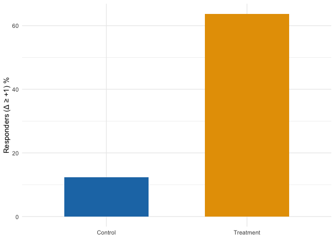
Show code
plot_df <- sumA %>%transmute(arm_fct, Pre = pre_mean, Post = post_mean) %>% tidyr::pivot_longer(cols =c(Pre, Post), names_to ="time", values_to ="mean") %>%mutate(time =factor(time, levels =c("Pre","Post")))ggplot(plot_df, aes(x = time, y = mean, group = arm_fct, color = arm_fct)) +geom_line(linewidth =0.7) +geom_point(size =2) +facet_wrap(~ arm_fct, nrow =1) +scale_color_manual(values =c("Control"= control_color, "Treatment"= treatment_color)) +scale_y_continuous(limits =c(1, 7), breaks =1:7) +labs(x =NULL, y ="Mean intent (1–7)") +theme_minimal() +theme(legend.position ="none")
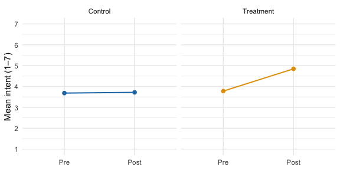
Pre vs Post means by arm (full 1–7 scale)
Durability Analysis
We encountered an outcome‑page implementation failure in the first run that prevented collection of immediate post‑intent. To recover the primary outcome, we contacted those participants later via Prolific for a short follow‑up survey that included the same 1–7 intention item. We linked respondents deterministically by hashed Prolific IDs and computed the delay between their original intervention completion and the follow‑up response. This section estimates the arm effect using the delayed post and examines whether the effect appears durable over the observed follow‑up window. This analysis is exploratory only and the participants in this sample are excluded from the confirmatory analysis.
We estimate the adjusted arm effect using the delayed post‑intent (N = 66). The estimate is 1.087 (95% CI 0.517, 1.658; p = 0.000).
Histogram of days between intervention and rescue follow‑up
Show code
# Narrower bins without annotations for clarity ---------------------------binw <-max(0.25, diff(range(dur$days_delay, na.rm =TRUE)) /20)ggplot(dur, aes(x = days_delay)) +geom_histogram(binwidth = binw, fill ="#7DA0B1", color ="white", boundary =0) +labs(x ="Days between intervention completion and follow-up", y ="N") +theme_minimal()
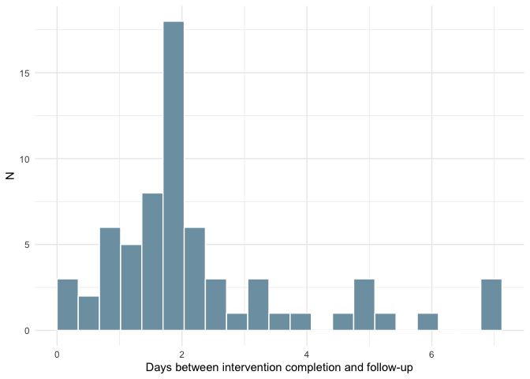
Histogram of days between intervention and rescue follow‑up
Adjusted arm effect by follow-up window using quantile-based bins; points show estimates and bars show 95% CIs; dashed line at zero.
Show code
ggplot(bin_tbl, aes(x = bin, y = estimate)) +geom_hline(yintercept =0, linetype ="dashed", color ="gray50") +geom_errorbar(aes(ymin = conf.low, ymax = conf.high), width =0.2, color = treatment_color) +geom_point(size =2.2, color = treatment_color) +labs(x ="Follow-up window", y ="Adjusted arm effect on post-intent") +theme_minimal()
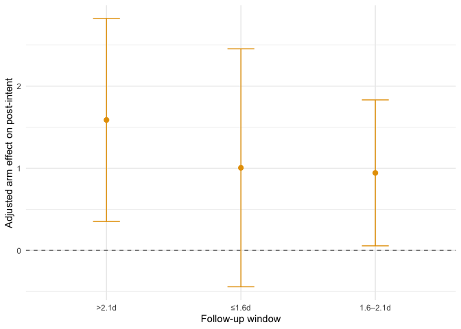
Adjusted arm effect by follow-up window using quantile-based bins; points show estimates and bars show 95% CIs; dashed line at zero.
Taken together, the positive arm effect is evident within the most common follow-up window (≤1.6d) at 1.01, and remains positive in the next window (1.6–2.1d) at 0.94. This pattern indicates that the effect persists over the observed follow-up period (up to 7.1 days), with wider confidence intervals at longer delays due to smaller sample sizes.
Show code
# Comparison figure: immediate vs rescue overall and windows --------------imm_vc <- sandwich::vcovHC(mod_h1, type ="HC3")imm_est <-unname(coef(mod_h1)["arm_coded"])imm_se <-sqrt(diag(imm_vc))["arm_coded"]imm_df <- mod_h1$df.residualimm_crit <-qt(0.975, imm_df)comp_tbl <-tibble(group =c("Immediate (primary)", "Rescue overall", paste0("Rescue ", bin_tbl$bin)),estimate =c(imm_est, arm_est_D, bin_tbl$estimate),se =c(imm_se, arm_se_D, bin_tbl$se)) %>%mutate(conf.low = estimate -1.96* se,conf.high = estimate +1.96* se,group =factor(group, levels =rev(group)))ggplot(comp_tbl, aes(x = group, y = estimate)) +geom_hline(yintercept =0, linetype ="dashed", color ="gray60") +geom_errorbar(aes(ymin = conf.low, ymax = conf.high), width =0.2, color = treatment_color) +geom_point(size =2.2, color = treatment_color) +coord_flip() +labs(x =NULL, y ="Adjusted arm effect (95% CI)") +theme_minimal()
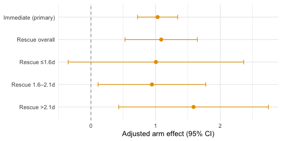
Comparison of adjusted arm effects: immediate (primary) and rescue overall, alongside rescue window-specific estimates with 95% CIs.
Engagement in the Experimental Arm
We explore whether greater chat engagement within the Experimental arm is associated with higher post-intent or change in intent (post minus pre), adjusting for baseline intention. These are descriptive associations and do not imply causality.
In the Experimental arm, chat engagement shows a negative but not statistically significant association with post-intent: β = -0.0007 per chat-point (95% CI -0.0026, 0.0012).
Experimental arm: ANCOVA with chat_points (HC3)
term
estimate
std.error
p.value
(Intercept)
1.2427
0.5314
NA
pre_intent
0.9944
0.0868
0.0000
chat_points
-0.0007
0.0010
0.4845
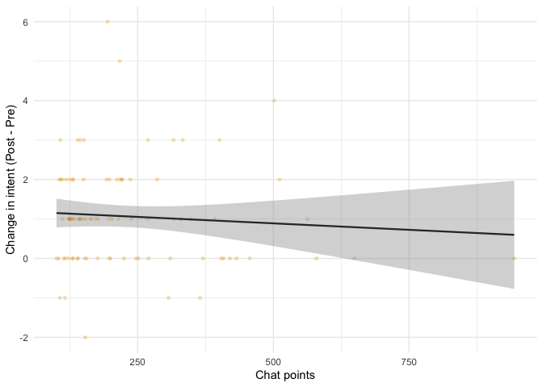
Experimental arm: chat points vs change in intent (with linear fit)
Individual Trajectories
Show code
traj_points <- analysis_confirm %>%transmute(arm_fct,pre = pre_intent,post = post_intent,pid = pid_hash) %>% tidyr::pivot_longer(c(pre, post), names_to ="time", values_to ="intent") %>%mutate(time =factor(time, levels =c("pre","post"), labels =c("Pre","Post")))# To avoid overplotting on integer scale set.seed(123)traj_points$intent_j <- traj_points$intent +runif(nrow(traj_points), -0.03, 0.03)ggplot(traj_points, aes(x = time, y = intent_j, group = pid, color = arm_fct)) +geom_line(alpha =0.2) +scale_color_manual(values =c("Control"= control_color, "Treatment"= treatment_color)) +scale_y_continuous(breaks =1:7, limits =c(1,7)) +facet_wrap(~ arm_fct, nrow =1) +labs(x =NULL, y ="Intention (1–7)") +theme_minimal() +theme(legend.position ="none")
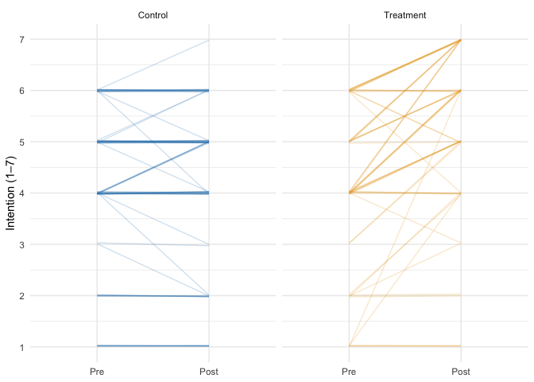
Individual participant trajectories from Pre to Post by arm
Discussion
A combination of persuasive informational content and a focused motivational-interviewing-style engagement with an LLM produced a clear and significant increase in vaccination intention among MMR-hesitant U.S. parents relative to a structure-matched active non-vaccine-related child safety information control. The increase in intent appears to persist over several days.
Intent Increase
Among participants with baseline head‑room (pre ≤ 6), the Treatment arm increased by Δ ≈ 1.07 points, while Control was essentially unchanged (Δ ≈ 0.03). The ANCOVA arm effect (Treatment vs Control) is β̂ ≈ 1.03 with a 95% CI of 0.72–1.34, excluding 0. Treatment group parent intent increases from pre-to-post intervention by slightly more than a full point on the seven‑point scale. 63.7% of Treatment participants increased their vaccination intention by at least one point vs 12.4% of Control participants.
Durability
Using delayed post‑intent collected on Prolific, the adjusted arm effect remains positive (β̂ ≈ 1.09) over several days. While exploratory and subject to caveats, these results are suggestive of effect persistence.
Prior Context
In a prior RCT (analysis write‑up, preregistration), an LLM conversation about MMR did not significantly outperform static CDC‑style materials (β̂ ≈ 0.14; 95% CI −0.11, 0.40), though both arms improved pre→post. Here, the control group was not exposed to vaccine‑related content, so a larger between‑arm contrast was both expected and observed. The absolute effect is approximately double the effect size observed in either arm in RCT‑1. Possible explanations include:
an additive effect from combining static content with LLM dialogue
more persuasive static content, including social norm statements and anticipated regret cues
improved prompt engineering, including motivational interviewing style
framing the intervention around an imagined appointment
Disentangling these mechanisms requires further research, but overall the trials suggest that both static content and LLM conversation can raise intention, and that combining them against a non‑MMR control yields a substantial effect.
Limitations
Outcomes are self‑reported intentions, evidence for durability is over a short time window and with attrition, and the experiment was conducted online in a U.S.-only sample.
Implications
A brief, appointment‑framed MMR content review and conversation can shift intention meaningfully relative to a non‑vaccine control, with encouraging signs of durability over several days.
Further research
Additional pre-clinical work could explore and disentangle the mechanisms of action, and a clinical trial to assess whether an intervention of this kind can impact real-world vaccination rates seems clearly warranted.
Data & Code Availability
The Quarto source for this report and a self-contained HTML render will be published on the investigator’s website and linked to from the OSF project containing the preregistration. Participant‑level data include potentially identifying Prolific IDs and cannot be shared publicly; they will be provided upon reasonable request under a data‑use agreement.
Provenance
This document was rendered with R 4.5 and renv‑pinned packages. Batch analysis files resolved at render time: